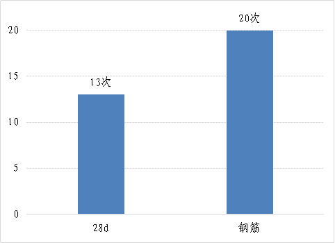

为贯彻落实《住房和城乡建设部等部门关于推动智能建造与建筑工业化协同发展的指导意见》《北京市住房和城乡建设委员会关于激励本市房屋建筑和市政基础设施工程科技创新和创建智慧工地的通知》工作要求，推进我市城市轨道交通工程工业化、数字化、智能化升级，进一步提高城市轨道工程管理的信息化、智能化、精细化水平。3月25日，市监督总站魏吉祥站长带队赴轨道交通工程3号线08标段、12号线25标段开展智慧工地创建工作调研。
目前，我市城市轨道交通工程智慧工地创新主要体现在四个方面：一是在人员管理方面。可利用现场布置的全景摄像头和枪式摄像头，采用人脸识别方式对全体施工人员的进出场、安全教育情况进行管理，通过AI分析系统，实现施工场地安全帽佩戴和高空作业安全带佩戴、悬挂的自动侦测，实现施工现场无间断、无死角监管。二是在机械设备管理方面。可通过在汽车吊、塔吊等施工机械驾驶舱布置摄像头，实现机械操作授权管理，防范和避免非授权人员私自使用机械设备。三是在施工质量管理方面，进行了桩基础施工工艺的全流程在线管理的应用；在钢结构焊接作业中，探索使用焊接机器人替代人工焊接作业，推动系统化管控、机械化施工，确保工程高质量发展。四是在火情风险防控管理方面，可通过AI分析实现施工作业面火苗自动识别和消防联动预警；通过视频、定位和手机APP，实现动火证在线审批和管理。

下一步，市监督总站将积极引导与指导在建工程开展智慧工地创建工作，通过“安全质量月”活动，适时将成熟的、可复制的智慧工地管理技术和方法进行推广，督促各参建单位积极践行新发展理念，压实智慧工地创建主体责任，强化新技术、新材料、新工艺、新设备有效应用，确保智慧工地创建工作有序推进。
【页面纠错】 【大 中 小】 【打印】 【关闭】